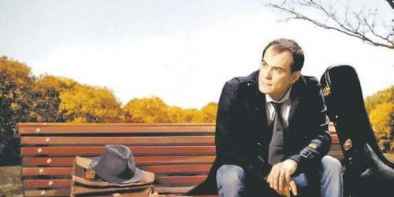

Nota de tapa
Entrevista con Ismael Serrano

<p>De visita por Argentina, guitarra al hombro, el cantautor Ismael Serrano conversó con Sudestada sobre temas conocidos: la memoria, el olvido, el amor y la guerra. Heredero de esa vasta tradición que arrastra la canción de autor, el español nos ...